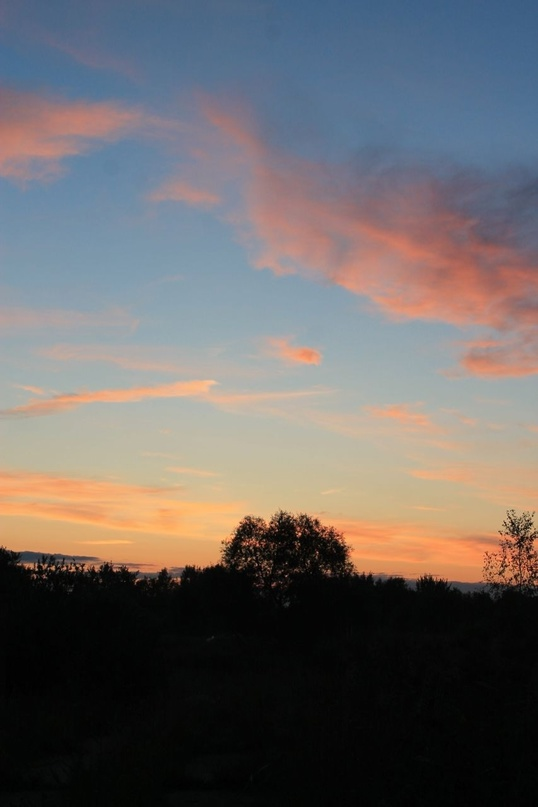
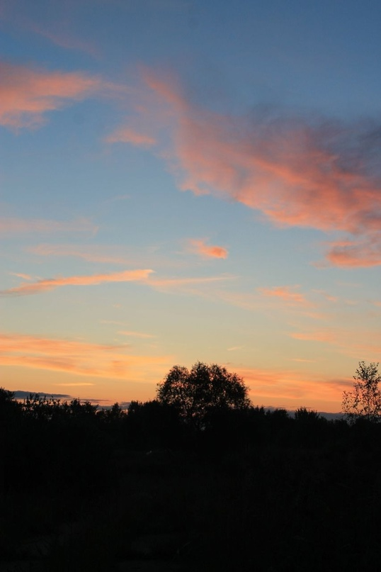

Современное искусство живописи отличается разнообразием стилей и направлений,
предоставляя зрителям широкий спектр художественных форм и идей.
 

Абстрактная скульптура привлекает внимание своей необычной формой и способностью вызывать
различные ассоциации и эмоции у каждого наблюдателя.
Фотография как искусство позволяет фиксировать моменты, которые становятся не только воспоминаниями,
но и предметом для размышлений и интерпретаций.